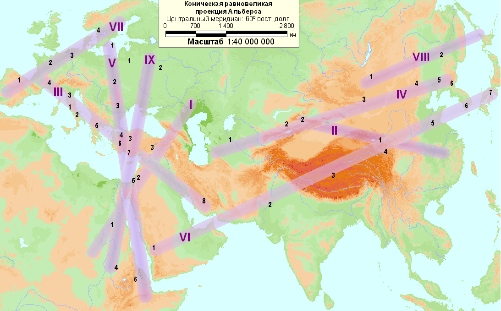
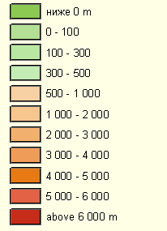

Л. Н. Гумилёв. Этногенез и биосфера Земли. 7. Оси зон пассионарных толчков
|  |
Условные обозначения

На рис. выше римской цифрой обозначен порядковый номер толчка, арабскими цифрами пронумерованы этносы, возникшие вследствие данного пассионарного толчка.
Список пассионарных толчков
-
I - Случай XVIII в. до х.э.
- 1. Египтяне-2 (Верхний Египет). Крушение Древнего царства. Завоевание гиксосами Египта в XVII в. Новое царство. Столица в Фивах (1580 г.) Смена религии. Культ Озириса. Прекращение строительства пирамид. Агрессия в Нумибию и Азию. 2) Гиксосы (Иордания. Северная Аравия). 3) Хетты (Восточная Анатолия). Образование хеттов из нескольких хатто-хуритских племен. Возвышение Хаттуссы. Расширение на Малую Азию. Взятие Вавилона.
-
II - Случай XI в. до х.э.
- 1) Чжоусцы (Северный Китай: Шэньси). Завоевание княжеством Чжоу империи Шан Инь. Появление культа Неба. Прекращение человеческих жертвоприношений. Расширение ареала до моря на востоке, Янцзы на юге, пустыни на севере. 2) (?) Скифы (Центральная Азия).
-
III - Случай VIII в. до х.э.
- 1) Римляне (центральная Италия). Появление на месте разнообразного италийского (латино-сабино-этрусского) населения римской общины-войска. Последующее расселение на среднюю Италию, завоевание Италии, закончившееся образованием Республики в 510 г. до н.э. Смена культа, организации войска и политической системы. Появление латинского алфавита. 2) Самниты (Италия). 3) Эквы (Италия). 4) (?) Галлы (южная Франция). 5) Эллины (средняя Греция). Упадок ахейской критомикенской культуры в XI-IX вв. до н.э. Забвение письменности. Образование дорийских государств Пелопоннеса (VIII в.). Колонизация эллинами Средиземноморья. Появление греческого алфавита. Реорганизация пантеона богов. Законодательства. Полисный образ жизни, 6) Лидийцы. 7) Килиикийцы (Малая Азия). 9) Персы (Персида). Образование мидян и персов. Дейок и Ахемен - основатели династий. Расширение Мидии. Раздел Ассирии. Возвышение Персиды на месте Элама, закончившееся созданием царства Ахеменидов на Ближнем Востоке. Смена религии. Культ огня. Маги.
-
IV - Случай III в. до х.э.
- 1) Сарматы (Казахстан). Вторжение в европейскую Скифию. Истребление скифов. Появление тяжелой конницы рыцарского типа. Завоевание Ирана парфянами. Появление сословий. 2) Кушаны-согдийцы (Средняя Азия). 3) Хунны (южная Монголия). Сложение хуннского родоплеменного союза. Столкновение с Китаем. 4) Сяньби. 5) Пуё. 6) Когурё (южная Маньчжурия, Северная Корея). Возвышение и падение древнего корейского государства Чосон (III-II вв. до н.э.). Образование на месте смешанного тунгусо-маньчжуро-корейско-китайского населения племенных союзов, выросших впоследствии в первые корейские государства Когуре, Силла, Пэкче.
-
V - Случай I в. х.э.
- 1) Готы (южная Швеция). Переселение готов от Балтийского моря к Черному (II в.). Широкое заимствование античной культуры, закончившееся принятием христианства. Создание готской империи в Восточной Европе. 2) Славяне. Широкое распространение из Прикарпатья до Балтийского, Средиземного и Черного морей. 3) Даки (современная Румыния). 4) Христиане (Малая Азия, Сирия, Палестина). Возникновение христианских общин. Разрыв с иудаизмом. Образование института церкви. Расширение за пределы Римской империи. 5) Иудеи-2 (Иудея). Обновление культа и мировоззрения. Появление Талмуда. Война с Римом. Широкая эмиграция за пределы Иудеи. 6) Аксумиты (Абиссиния). Возвышение Аксума. Широкая экспансия в Аравию, Нубию, выход к Красному морю. Позже (IV в.) принятие христианства.
-
VI - Случай VI в. х.э.
- 1) Арабы-мусульмане (Центральная Аравия). Объединение племен Аравийского полуострова. Смена религии. Ислам. Расширение до Испании и Памира. 2) Раджпуты (долина Инда). Низвержение империи Гупта. Уничтожение буддийской общины в Индии. Усложнение кастовой системы при политической раздробленности. Создание религиозной философии Веданты. Троичный монотеизм: Брама, Шива, Вишну. 3) Боты (южный Тибет). Монархический переворот с административно-политической опорой на буддистов. Расширение в Центральную Азию и Китай. 4) Табгачи. 5) Китайцы-2 (северный Китай: Шэньси, Шаньдун). На месте почти вымершего населения северного Китая появились два новых этноса: китайско-тюркский (табгачи) и средневековой китайский, выросший из группы Гуаньлун. Табгачи создали империю Тан, объединив весь Китай и Центральную Азию. Распространение буддизма, индийских и тюркских нравов. Оппозиция китайских шовинистов. Гибель династии. 6) Корейцы. Война за гегемонию между королевствами Силла, Пэкче, Когуре. Сопротивление танской агрессии. Объединение Кореи под властью Силла. Усвоение конфуцианской морали, интенсивное распространение буддизма. Формирование единого языка. 7) Ямато (Японцы). Переворот Тайка. Возникновение центрального государства во главе с монархом. Принятие конфуцианской морали как государственной этики. Широкое распространение буддизма. Экспансия на север. Прекращение строительства курганов.
-
VII - Случай VIII в. х.э.
- 1) Испанцы (Астурия). Начало реконкисты. Образование королевств: Астурия, Наварра, Леон и графства Португалия на базе смешения испано-римлян, готов, алан, лузитан и др. 2) Франки (французы). 3) Саксы (немцы). Раскол империи Карла Великого на национально-феодальные государства. Отражение викингов, арабов, венгров и славян. Раскол христианства на ортодоксальную и папистскую ветви. 4) Скандинавы (южная Норвегия, северная Дания). Начало движения викингов. Появление поэзии и рунической письменности. Оттеснение лопарей в тундру.
-
VIII - Случай XI в. х.э.
- 1) Монголы (Монголия). Появление "людей длинной воли". Объединение племен в народ-войско. Создание законодательства - Ясы и письменности. Расширение улуса от Желтого до Черного моря. 2) Чжурчжэни (Манчжурия). Образование империи Цзинь полукитайского типа. Агрессия на юг. Завоевание северного Китая.
-
IX - Случай XIII в. х.э.
1) Литовцы. Создание жесткой княжеской власти. Расширение княжества Литовского от Балтийского до Черного моря. Принятие христианства. Слияние с Польшей. 2) Великороссы. Исчезновение Древней Руси, захваченной литовцами (кроме Новгорода). Возвышение Московского княжества. Рост служилого сословия. Широкая метисация славянского, тюркского и угорского населения Восточной Европы. 3) Турки-османы (запад Малой Азии). Консолидация османским бейликом активного мусульманского Населения Ближнего Востока, пленных славянских детей (янычары) и морских бродяг Средиземноморья (флот). Султанат военного типа. Оттоманская Порта. Завоевание Балкан, Передней Азии и Северной Африки до Марокко. 4) Эфиопы (Амхара, Шоа в Эфиопии). Исчезновение Древнего Аксума. Переворот Соломонидов. Экспансия эфиопского православия. Возвышение и расширение царства Абиссиния в Восточной Африке.
Ссылки
Следующая страница ссылается на данную карту:
- Гумилёв Л. Н. Этногенез и биосфера Земли. Часть седьмая. МОСТ МЕЖДУ НАУКАМИ. XXIX. Пассионарность и сфера сознания. Кривая этногенеза.
Карта выполнена А. Родионовым в 2008 г.
Эта страница была последний раз обновлена 10/22/08.
|
|
06/10/20 - 03:44 |